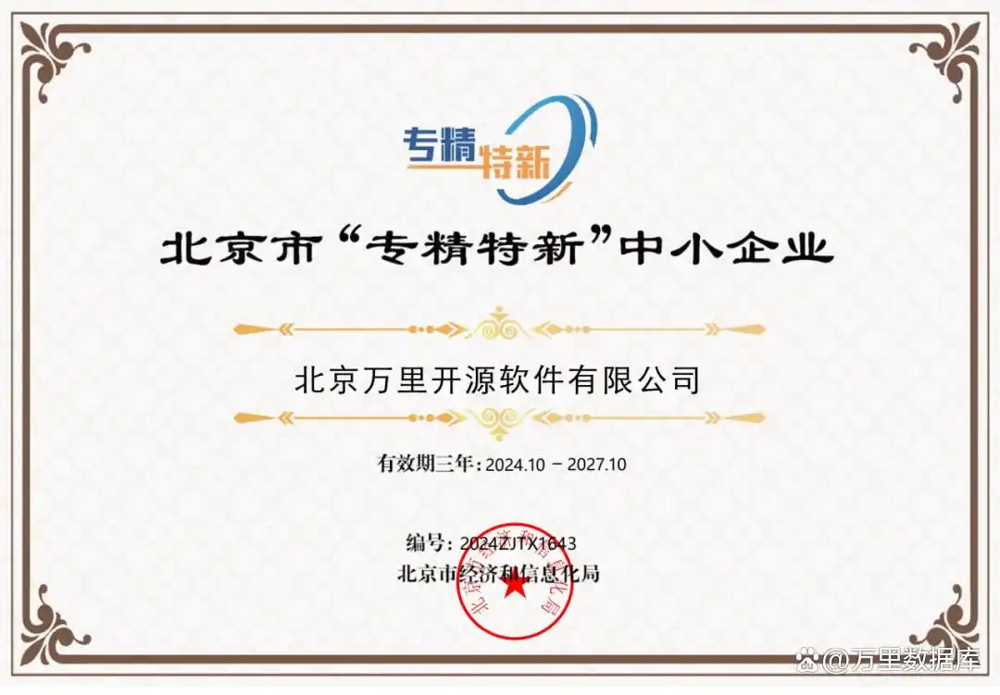

万里数据库高质量通过北京市“专精特新”中小企业复核
近日，北京市经济和信息化局公示了2021年度北京市专精特新中小企业到期复核通过的企业名单。经过严格的审核程序，北京万里开源软件有限公司（以下简称“万里数据库”）凭借扎实的数据库技术实力、创新能力和市场表现，高质量通过了此次复审。

▲北京市“专精特新”中小企业证书
根据北京市经济和信息化局发布的通知，按照工业和信息化部《优质中小企业梯度培育管理暂行办法》及《北京市优质中小企业梯度管理实施细则》的要求，北京市经济和信息化局组织开展了2021年度北京市专精特新中小企业到期复核工作。针对专业化、精细化、特色化和创新能力四类十四个指标进行分类评价，旨在遴选一批在产业基础核心领域、产业链关键环节中，具有突出创新能力、掌握核心技术、细分市场占有率高、质量效益好的企业，进而推动行业创新、促进就业、改善民生。
万里数据库作为一家成立于2000年的公司，专注国产数据库技术研发24年，打造了安全数据库GreatDB、数据库运维管理平台GreatADM、数据迁移同步工具GreatDTS等在内的一站式数据库产品与解决方案，产品100%兼容MySQL，完美继承MySQL技术生态，广泛应用于金融、运营商、能源、政府等行业核心业务系统，累计部署超过2000个业务场景，为企事业单位实现国产化替代和数字化转型提供了坚实的技术支撑，是平替MySQL的最优国产数据库选择。
目前，万里数据库拥有国家高新技术企业、中关村高新技术企业、ISO9001质量管理体系认证、ISO27001信息安全管理体系认证、ISO22301业务连续性管理认证、CMMI软件能力成熟度认证、EAL4+等多项资质、发明专利与软件著作权，在国产软硬件上下游拥有超300家合作伙伴，完成了600+款产品兼容认证，打造了相对完善的国产生态体系，在壮大公司自身实力的同时，不遗余力推动国产生态体系发展壮大。
此次通过专精特新中小企业复审，充分体现相关部门对万里数据库经营条件、创新能力、专业化程度、精细化程度的认可，也是对公司在关键基础设施建设、坚持核心技术自主创新的肯定。
未来，万里数据库将积极响应国家和北京市政策导向，持续加强技术创新和研发投入，坚持走“专精特新”道路，以专业的数据库技术赋能千行百业，释放数据价值，助力央国企完成数字化转型，加速我国数字经济高质量发展。
举报/反馈